Background. This data is from a study of transcription factors critical to B cell maturation by Lynn Corcoran and Wendy Dietrich at the WEHI. Mice which have a targeted mutation in the Bob (OBF-1) transcription factor display a number of abnormalities in the B lymphocyte compartment of the immune system. Immature B cells that have emigrated from the bone marrow fail to differentiate into full fledged B cells, resulting in a notable deficit of mature B cells.
Arrays. Arrays were printed with expressed sequence tags (ESTs) from the National Institute of Aging 15k mouse clone library, plus a range of positive, negative and calibration controls. The arrays were printed using a 48 tip print head and 26x26 spots in each tip group. Data from 24 of the tip groups are given here. Every gene (ESTs and controls) was printed twice on each array.
Hybridizations. A retrovirus was used to add Bob back to a Bob deficient cell line. Two RNA sources were compared using 2 dye-swap pairs of microarrays. One RNA source was obtained from the Bob deficient cell line after the retrovirus was used to add GFP ("green fluorescent protein", a neutral protein). The other RNA source was obtained after adding both GFP and Bob protein. RNA from Bob+GFP was labelled with Cy5 in arrays 2 and 4, and with Cy3 in arrays 1 and 4.
For this example, you will need the file BobArraysLoaded.lma, which can be downloaded from
http://bioinf.wehi.edu.au/limmaGUI/DataSets.html.
From the file menu, select Open.

Open the file, BobArraysLoaded.lma. This file can be downloaded from the URL given above. Advanced
users may be interested to know that a Limma (.lma) file is really just an RData file, so it can easily
be loaded into an R session. However, it may appear more complicated than standard RData files
associated with the limma package because it allows for multiple parameterizations and stores
them in a list data structure called ParameterizationList.
After loading Bob.lma, have a look at the RNA targets by clicking on "RNA Targets" in the "RNA Targets" menu.
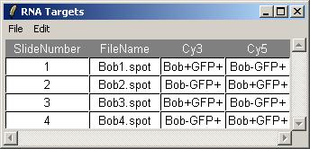You can also check the array layout by clicking on "Layout Parameters" in the "Layout" menu.
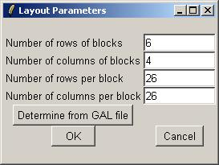Upon opening BobArraysLoaded.lma, it is evident that one parameterization is available, "Bob GFP" (containing one parameter), and that no linear model fit has been computed yet.
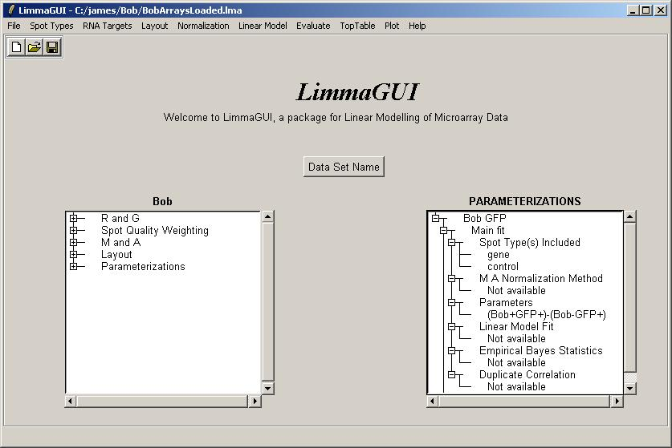Click on "Compute Linear Model Fit" in the Linear Model menu.
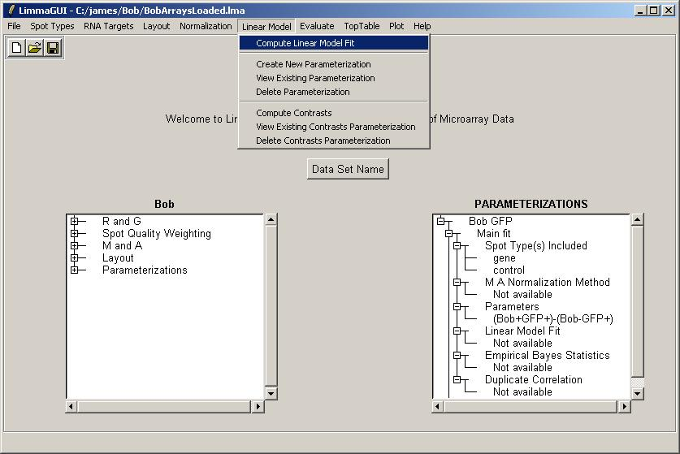Select "No". We don't need to create a new parameterization, as we already have the "Bob GFP" parameterization.
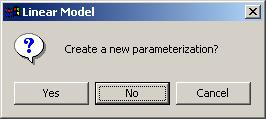Click OK to select the "Bob GFP" parameterization.
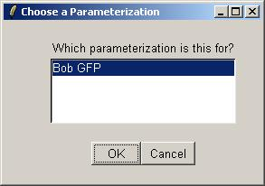Click "Yes" to normalize within arrays.
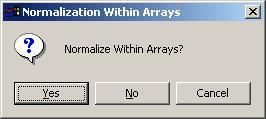Use the default within-array normalization method (print-tip group loess).
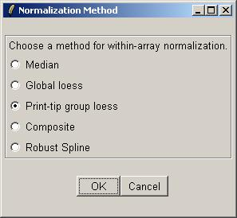Click "No" to avoid normalizing between arrays.

The number of duplicates for this data set is 2, i.e. each gene is printed twice on each array. The duplicate pairs are adjacent to each other on the array, so the spacing between them is just 1.
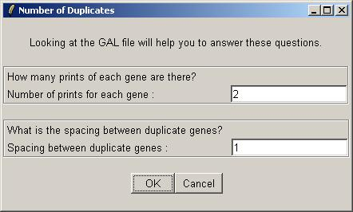If you never estimate the correlation between duplicates for a data set, you should let limmaGUI do it the first time (which could take a very long time). In the future, you may prefer to estimate this correlation yourself to save time. Typically, the duplicate correlation will be between 0.5 and 1.
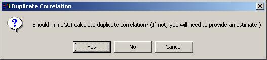After a LONG wait, the duplicate correlation is displayed in a message box, indicating that the correlation analysis and linear model fitting is complete. (It can be viewed later on in the Linear Model Fits drill-down box on the main limmaGUI window.
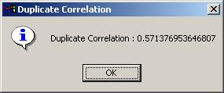The drill-down in the Parameterizations window now shows that the linear model fit has been computed and that the duplicate correlation is available.
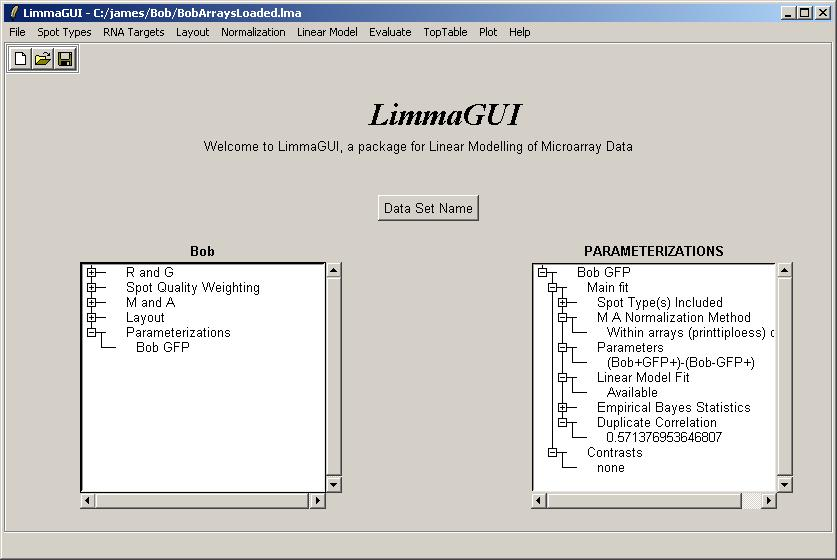Now might be a good time to save a Limma (.lma) file.

The same data set can be saved at different stages of the analysis using different file names.
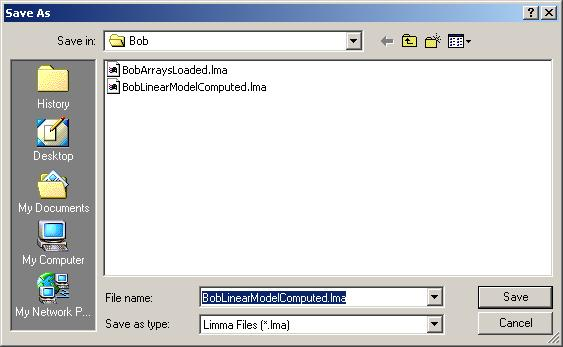From the "Plot" menu, click on "Duplicate Correlation Box Plot".
There is only one parameterization, so click OK.
A box plot showing the range of correlations for duplicate spots is shown below.
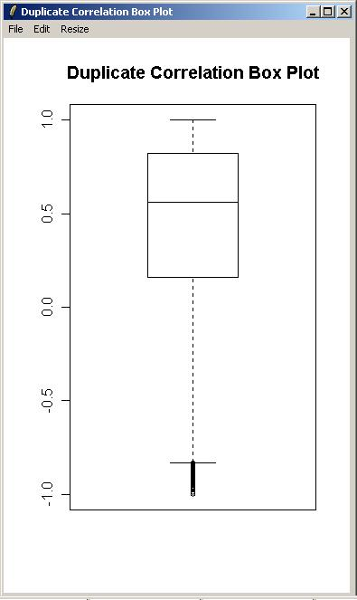Click on "Table of Genes Ranked in order of Differential Expression" in the "TopTable" menu.
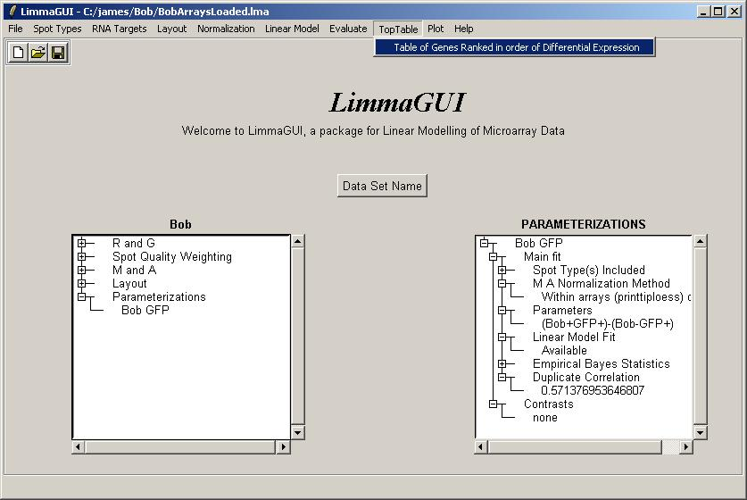There is only one parameterization, so click OK.
There is only one parameter, so click OK.
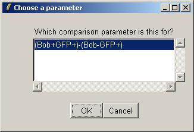Leave the toptable options (not shown) at their default values and click OK. The resulting table is shown below.
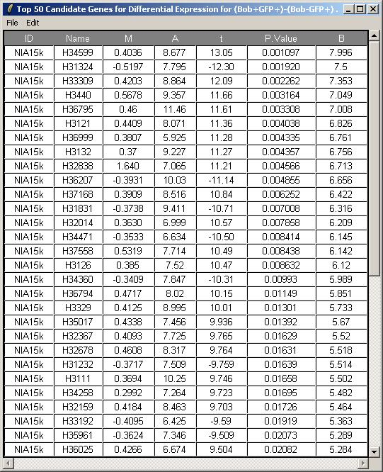Now click on "Log Odds Plot" in the Plot menu.
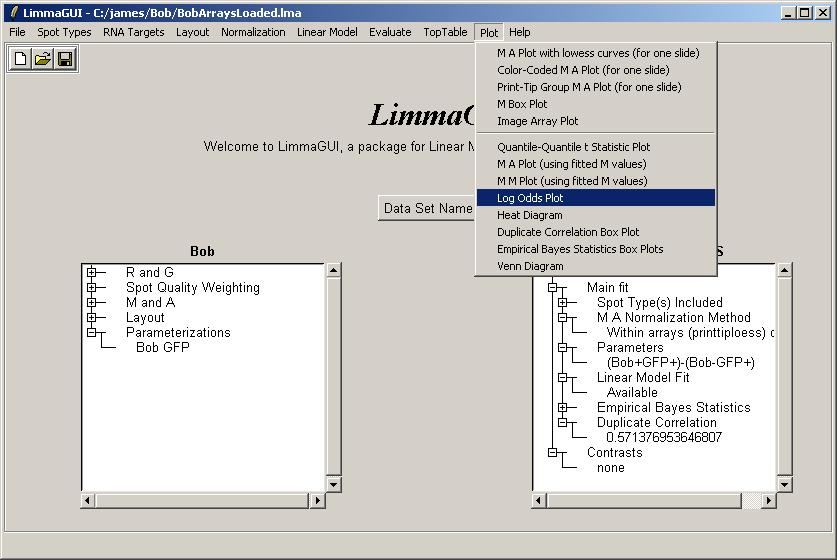There is only one parameterization, so click OK.
There is only one parameter, so click OK.
For this plot, we will not label any of the top differentially expressed genes.
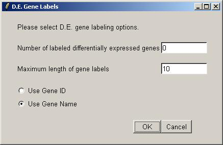The log odds plot is shown below.